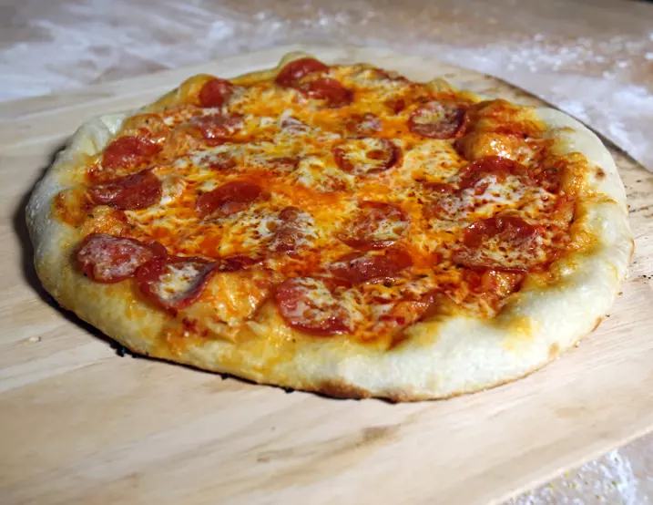

Alton Browns Pizza Dough

Description
Alton browns easy to make pizza dough with only six ingrediants thats ready for all your favorite toppings
Ingrediants
- 690 grams bread flour, plus 1/2 cup for shaping
- 20 grams kosher salt
- 15 grams sugar
- 9 grans active dry yeast
- 455 milliliters filtered water
- 15 grams olive oil, plus extra for brushing crust
- Sauce and pizza toppings, as desired
Steps
- Measure all dry ingredients and add to the bowl of a stand mixer fitted with the dough hook attachment. Measure the water and olive oil into a measuring cup and then add to the dry ingredients. Mix on low until the dough comes together, forming a ball and pulling away from the sides of the bowl. Increase mixer speed to medium and knead for 5 minutes.
- Remove the dough to a lightly floured countertop and smooth into a ball. Lightly oil a mixing bowl, place the dough in the bowl and cover with plastic wrap. Refrigerate for 18 to 24 hours.
- Place rested dough on the countertop. Punch down the dough into a rough rectangle shape, then tightly roll into a 12- to 15-inch log. Split the dough into 3 equal parts using either a large serrated knife or dough scraper. Flatten each third into a disk, then shape it into a smooth ball by folding the edges of the round in toward the center several times and rolling it between your hands on the counter. You may want to moisten the counter with water to up the surface tension so that the ball tightens up instead of sliding across the counter.
- Cover each ball with a clean tea towel and allow to rest for 30 minutes. At this point, you can also transfer the dough to air-tight plastic containers and refrigerate for up to 8 hours. Just make sure you bring them to room temperature for 30 minutes before forming.
- To bake, place a pizza stone on the lower rack and heat the oven to 500°F, or hotter if possible. Give the oven a good 30 minutes to heat up.
- When you’re ready to build the pizzas, sprinkle a couple teaspoons of flour on a peel and place the dough right in the middle. Pound the dough into a disk with your hands, then pick it up and pull it through your fingers to create the outer lip, a critical feature that cannot be created with a rolling pin — in fact, rolling rather than stretching will just ruin the whole gosh-darned thing.
- Stretch the dough either by spinning it (the weight of the outer lip stretches the dough via centrifugal force) or by placing the dough on a board and continuously turning and pulling. Shake the peel from time to time to make sure the dough doesn’t stick.
- Brush the lip with oil, then dress the pizza with olive oil and tomato sauce. Top with fresh herbs (like oregano and basil) and a good melting cheese. I usually go with a mixture of mozzarella, Monterey Jack, and provolone, but that’s just me.
- Slide the pizza onto the hot pizza stone. To do this, position the front edge of the peel about 1 inch from the back of the stone. Lift the handle and jiggle gently until the pizza slides forward. As soon as the dough touches the stone, start pulling the peel back toward you while still jiggling. While a couple of inches of dough are on the stone, quickly snap the peel straight back. As long as the dough isn’t stuck on the peel, it will park itself nicely on the stone.
- Keep an eye on the dough for the first 3 to 4 minutes. If any big bubbles start ballooning up, reach in with a paring knife or fork and pop them. Bake for 7 minutes or until the top is bubbly. Slide the peel under the pizza and lift to check the underside, which should be nicely brown.
- Slide the peel under the pizza and remove to the counter or a cutting board. Let it rest for at least 2 minutes before slicing with a chef’s knife or pizza cutter.
credit: Altonbrown.com